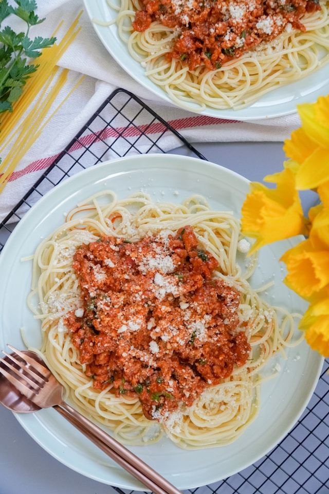

Back to Main Page
Mom's Spaghetti Bolognese

Description
Recipe passed on from my Italian grandfather. The ultimate comfort food.
Leftovers freeze nicely! To make this recipe more authentic, you can use a
mixture of ground veal and beef. You can also substitute the balsamic
vinegar for 1/2 cup of red wine.
Ingredients
- 1 (16 ounce) package spaghetti
- 2 tablespoons olive oil
- 3 slices bacon, diced
- 1 large onion, finely chopped
- 1 stalk celery, finely chopped
- 1 carrot, finely chopped
- 1 teaspoon dried oregano
-
...Click Here to See Full Ingredient List...
How to Prepare
-
Bring a large pot of lightly salted water to a rolling boil. Cook the
spaghetti in the boiling water until cooked through yet firm to the
bite, about 12 minutes; drain.
-
Heat the olive oil in a large pot over medium heat. Cook the bacon in
the oil until crisp, 8 to 10 minutes. Stir the onion, celery, carrot,
and oregano into the bacon; continue cooking until the vegetables begin
to soften, another 8 to 10 minutes. Add the garlic and cook until
fragrant, about 2 minutes. Crumble the ground beef into the vegetable
mixture; cook and stir until the beef is completely cooked and no longer
pink, 8 to 10 minutes.
-
Pour the balsamic vinegar over the ground beef mixture; allow to simmer
until the liquid evaporates, about 5 minutes. Stir the crushed tomatoes,
tomato paste, and sugar into the ground beef mixture; bring the mixture
to a boil, season with salt and black pepper, and remove from heat. Stir
the fresh basil into the mixture.
-
Ladle the sauce over the cooked spaghetti. Top with Parmesan cheese to
serve.